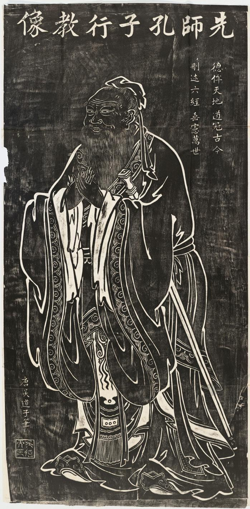
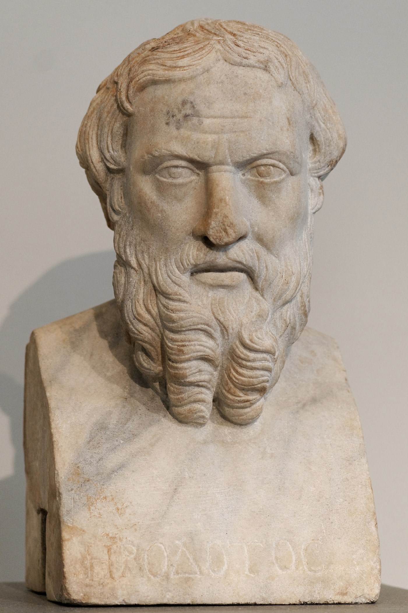
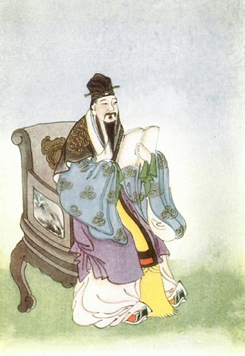
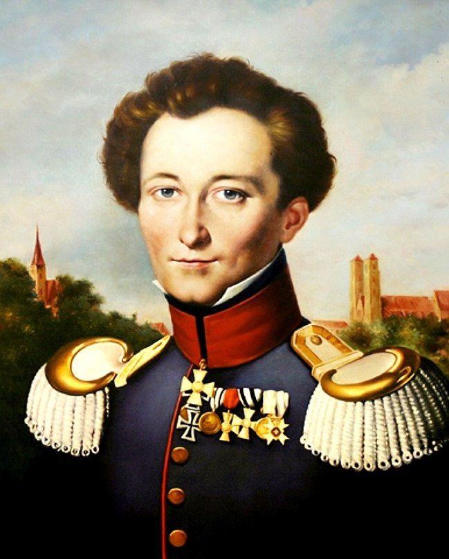
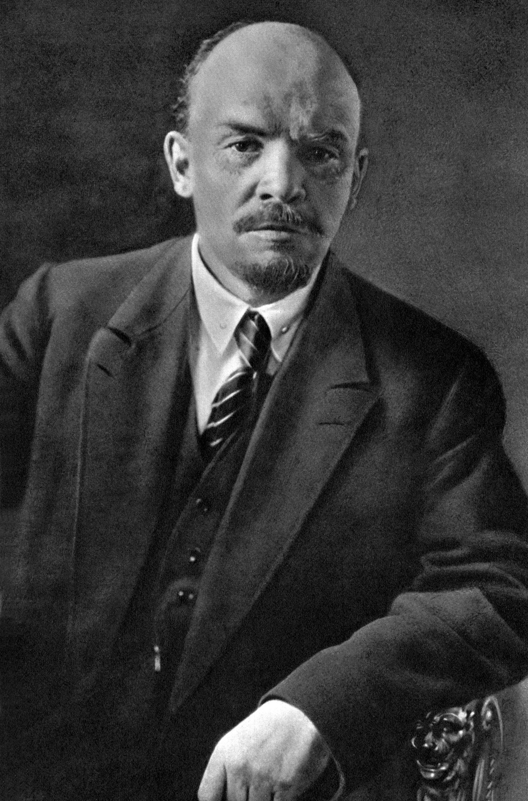

[동지 사냥의 역사·철학①] 노선 차이에 '배신자' 딱지, 동지를 적으로 모는 권력투쟁
문사철과 동양의 학에서 양심·뜻·원칙·사상·노선·전술까지, 차이의 층위
사안별 견해는 협상, 노선은 토론과 승복, 뜻이 다르면 동지 아닌 연대
코민테른 사회파시즘론에서 민주노동당·통합진보당 분열까지, 끌어올림의 함정
2026년 10월 14일 김민석 더불어민주당 대표가 신천지 교인의 "상당한 정도의 집단적 가입"을 확인했다고 밝혔다. 경선 개입은 "증언들은 있다"고만 했다. 친청계 한민수·이성윤 최고위원은 김 대표가 전당대회 때 제기한 '3자 비밀연합' 의혹의 근거를 밝히라고 맞섰다.
7월 김 후보가 신천지 개입설을 꺼내자 친청계 이성윤·최민희·한민수 후보가 "증거를 제시하라"고 맞섰다. 김 대표는 8월 27일 워크숍에서 정청래 전 대표와 노선을 두고 "서로 절충하기가 어렵다는 잠정적 결론을 내렸다"고 했다. 정 전 대표는 "모욕주기식 일방적 난타"라고 반발했다.
국민의힘도 같다. 10월 8일 용인갑 조직위원장 결선에서 당 집계로 책임당원 44명이 투표 전화를 받지 못했다. 조직강화특위는 13일 재투표를 정했다가, 양향자 최고위원이 전면 재경선을 요구하며 불참하자 16일 기존 결과대로 윤재복 후보를 골랐다.
문제는 차이가 아니라 그 차이를 어느 층위에서, 어떤 태도로 다루느냐다. 진보정당은 2008년과 2012년에 이 일로 갈라졌고, 오늘은 거대 양당이 같은 길목에 섰다. 문학·역사·철학(문사철)에서 출발해 그 층위를 짚는다.
제1부 앎의 뿌리

문사철, 앎이 삶이 되는 길
그리스에서는 문학이 먼저 나왔다. 『일리아스』와 『오디세이아』를 남긴 호메로스는 기원전 9~8세기 사람으로 본다. 중국 『시경』은 주나라 때 불린 노래 305편을 모은 책으로, 공자가 엮었다고 전한다. 사람은 따지기 전에 이야기로 느꼈다.
역사와 철학의 순서는 잣대에 따라 갈린다. 탈레스는 기원전 6세기, 헤로도토스는 기원전 5세기 사람이라 철학이 앞선 듯 보인다. 그런데 글이 전하지 않는 탈레스가 일식을 미리 알렸다고 처음 적은 현존 기록이 헤로도토스 『역사』다.

기록이 있어야 생각도 오늘에 남는다. 문사철은 이야기로 느끼고(문), 기록으로 사실과 맥락을 알고(사), 물음으로 옳고 그름을 따지는(철) 차례로 볼 수 있다. 교양 과목을 늘어놓은 말이 아니라 앎이 삶으로 이어지는 순서다.
철학 이전 동양의 이름, 학과 도
'철학'이라는 말은 19세기에 생겼다. 니시 아마네가 필로소피아(philosophia, 지혜를 사랑함)를 '희철학(希哲學)'으로 옮겼다가 '철학'으로 줄였다. 이 말은 1874년 『백일신론』에 나온다. 그 전까지 동양은 이를 학(學)과 도(道)라 불렀다.
공자는 "열다섯에 배움에 뜻을 두었다"고 했고, 송나라 주희는 자기 학문을 도학이라 불렀다. 불교는 계율과 마음 모으기(선정)와 지혜를 삼학이라 부르며 함께 닦았다. 유학과 불학에서 학은 앎과 수양과 다스림을 한 몸에 품은 공부였다.
인도 우파니샤드와 중국 제자백가도 근본을 묻고 따졌다. 퇴계와 고봉은 사람 마음속 착한 싹과 감정이 어디서 나오는지 두고 1559년부터 1566년까지 편지로 논쟁했다. 이름이 달랐을 뿐 철학은 있었다. 따지는 공부가 있어야 차이를 층위로 가를 수 있다.
제2부 차이의 층위
양심과 뜻, 동지를 묶는 것
차이의 층위 맨 안쪽에 양심이 있다. 양심이라는 말은 『맹자』 고자 상편에서 나왔다. 맹자는 민둥산이 된 우산(牛山)을 들어 사람이 본래 지닌 어진 마음을 날마다 베어 낸다고 했다. 따지기 전에 이건 아니라고 느끼는 마음이다.

양심 위에 뜻(志)이 선다. 뜻은 무엇을 이루려 하느냐다. 공자는 "삼군의 장수는 빼앗을 수 있어도 필부의 뜻은 빼앗을 수 없다"고 했다. 뜻을 같이하는 사람을 동지(同志)라 부른다. 생각이 같아서가 아니라 뜻이 같아서 동지다.
태도는 따로 한 층위를 이루지 않고 양심에서 전술까지 모든 층위를 가로지른다. 같은 주장을 하면서 상대 말을 듣는 사람이 있고, 상대를 적으로 모는 사람이 있다. 주장은 같고 태도가 다르다. 갈등이 얼마나 깊어지느냐는 대개 태도가 정한다.
철학과 가치와 원칙, 넘지 않는 선
철학은 양심이 느낀 것을 이성으로 따지는 일이다. 철학 없는 양심은 자기 편견을 정의로 믿기 쉽고, 양심 없는 철학은 무엇이든 정당화하는 궤변이 되기 쉽다. 양심은 철학에 출발점을 주고, 철학은 양심이 편견인지 아닌지 검토한다.
따진 끝에 가치와 원칙이 선다. 가치는 무엇이 소중하냐이고, 원칙은 그 가치를 지키려 넘지 않는 선이다. 독일 사회민주당(사민당)은 1959년 고데스베르크 강령에서 마르크스주의 노선을 버렸다. 대신 자유·정의·연대를 기본 가치로 못 박았다.
동양은 이를 경(經)과 권(權)으로 말했다. 『맹자』 이루 상편은 남녀가 물건을 직접 주고받지 않는 것을 예(禮)로, 물에 빠진 형수를 손으로 건지는 것을 권(權)으로 봤다. 경을 지키되 권을 알아야 한다. 원칙을 너무 많이 세우면 작은 차이도 원칙 위반이 된다.
사상과 이념과 강령, 생각이 깃발이 될 때
사상은 세계와 사회를 보는 생각의 체계다. 철학은 그 가운데 개념과 논증으로 근본을 따지는 갈래다. 정치사상은 권력과 국가와 정의를 다루는 갈래이고, 철학과 겹치는 자리가 정치철학이다. 사상은 원칙보다 넓고 노선보다 깊다.
이념은 집단의 깃발이 된 사상이다. 자유주의와 사회주의가 그렇다. 사회를 어떻게 바꾸거나 지킬지 정하고 사람을 모은다. 사상은 반론을 받으면 스스로 고치지만, 이념은 믿음이 돼 반론과 싸우기 쉽다. 둘을 가르는 것은 내용보다 태도다.
강령은 생각이 아니라 문서다. 정당이 원칙과 목표와 기본 정책을 공식으로 못 박은 글이다. 같은 이념을 품어도 정당마다 강령이 다르다. 사민당이 고데스베르크 강령으로 국민정당이 됐듯이, 강령을 바꾸면 정당 성격이 통째로 바뀐다.
방법론에서 사안별 견해까지, 길의 다섯 층위
방법론은 정세를 읽는 틀이고, 노선은 그 판단으로 조직이 고른 길이다. 같은 사상에서도 판단이 다르면 다른 노선이 나온다. 러시아 볼셰비키와 멘셰비키는 같은 마르크스주의를 내걸고도 1903년 당대회에서 당원 자격 규정을 두고 갈라섰다.
전략과 전술은 본래 군사 용어다. 클라우제비츠는 『전쟁론』에서 전투에 군대를 쓰는 법을 전술로, 전쟁 목적에 전투를 쓰는 법을 전략으로 나눴다. 정치로 옮기면 전략은 한 시기의 큰 설계이고, 전술은 그날그날 움직이는 법이다.

사안별 견해는 점이고 노선은 선이다. 견해는 사안 하나 앞에서 어디에 서느냐를 말한다. 사안마다 고른 견해가 한 방향으로 이어지면 노선이 된다. 아래 층위로 내려갈수록 차이는 잦고 가벼우며, 차이를 다루는 법도 가벼워진다.
제3부 동지와 갈등
동지와 연대와 적수, 동지의 경계
동지의 선은 뜻과 원칙에 그어진다. 사안별 견해와 전술, 전략, 노선, 방법론이 달라도, 사상의 결이 달라도 뜻과 원칙을 함께 지키면 동지다. 거짓과 폭력, 공동의 일을 사익에 쓰는 일, 민주적 절차를 무너뜨리는 일은 그 선을 넘는다.
뜻이 다르면 동지가 아니다. 공자는 "도가 같지 않으면 서로 함께 꾀하지 않는다"고 했다. 그래도 목표가 맞으면 연대한다. 동지가 뜻을 함께하는 관계라면, 연대는 뜻이 달라도 목표가 겹칠 때 손잡는 관계다. 연대는 조직 밖으로도 열려 있다.
샹탈 무페는 2000년 『민주주의의 역설』에서 적과 적수를 갈랐다. 적수는 같은 민주주의 공간을 나누되 다르게 짜려고 겨루는 맞수다. 적은 그 공간 자체를 부수려 해 함께 설 수 없는 상대다. 동지, 연대, 적수, 적으로 원이 넓어진다.

노선 차이를 사상 딱지로, 끌어올림의 함정
층위마다 차이를 다루는 법이 다르다. 사안별 견해는 협상하고, 전술은 현장에서 고치고, 전략은 시기마다 따진다. 노선은 토론해 결정하고 승복한다. 사상은 논쟁하되 강령에서 합의하고, 원칙이 다르면 갈라설지 따진다. 뜻이 다르면 연대 상대로 대한다.
레닌은 1906년 글 「비판의 자유와 행동의 통일」에서 강령 원칙 안에서는 비판을 자유롭게 하고 당의 행동은 하나로 모으라고 했다. 그러나 볼셰비키는 1921년 당대회에서 분파를 금지해 이 원칙을 좁혔다. 이 결의는 뒤에 스탈린이 반대파를 몰아내는 도구가 됐다.
갈등은 아래 층위 차이를 끌어올릴 때 적대가 된다. 전술 차이를 노선 문제로, 노선 차이를 원칙이나 양심 문제로 키우는 순간 변절자, 분파주의자, 배신자 같은 딱지가 붙는다. 토론으로 고칠 수 있던 틀린 동료가 없애야 할 적이 된다. 딱지는 노선 논쟁 옷을 입은 권력투쟁 무기다.
코민테른(국제공산당)은 1928년 사회민주주의를 주적으로 삼았다. 1929년 이를 '사회파시즘'론으로 굳혔다. 나치 집권 뒤 공산당은 1933년 2월 사실상, 사민당은 6월 정식으로 금지됐다. 코민테른은 1935년 인민전선으로 돌아섰다.
민노당·통진당 분열과 2026년 진영 갈등
2008년 2월 3일 민주노동당 당대회에서 자주파는 심상정 비대위 혁신안의 일심회 관련자 제명 항목을 지우는 수정안을 가결했다. 일심회는 국가기밀을 북한에 넘겨 유죄가 확정된 사건이다. 원칙의 다툼이었다. 평등파는 자주파의 '종북주의'를 비판하며 탈당해 3월 진보신당을 세웠다.
통합진보당은 2011년 12월 민주노동당과 국민참여당, 새진보통합연대가 합쳐 출범했다. 2012년 5월 2일 진상조사위는 비례대표 경선을 "총체적 부실"로 봤다. 그해 9월 심상정·노회찬·유시민 등이 탈당했다. 남은 당은 2014년 12월 19일 헌법재판소 결정으로 해산됐다.
통진당을 떠난 유시민 작가는 올해 3월 18일 친명 진영을 가치를 좇는 A, 이익을 좇는 B, 둘이 겹친 C로 나눴다. 그 뒤 'B준호' 같은 멸칭이 퍼졌다. 유 작가는 분석 도구라고 해명했다. 김민석 대표는 8월 27일 "나는 그것이 별로 맞다고 생각하지 않는다"고 했다.
김 대표는 8월 28일 "정책논쟁과 노선논쟁은 바람직한 것"이라며 "인신공격과 허위 조작, 악마화가 진짜 문제"라고 했다. 집단가입은 당원 자격의 원칙 문제다. 경쟁자를 그 가입과 묶은 근거가 없다면 끌어올림이다. 판정은 조사에 달렸다.
국민의힘 용인갑 사고는 노선이 아니라 절차 문제다. 절차대로 바로잡으면 원칙을 지키는 일이고, 상대를 겨누는 무기로 쓰면 끌어올림이 된다. 그 순간 동지는 적이 되고, 노선 논쟁은 권력투쟁이 된다. 두 당 모두 그 문턱에 섰다.
※ 이 칼럼은 2026년 10월 16일 필자 페이스북에 먼저 실었다. 본문의 사실은 그때를 기준으로 한다.
참고문헌
1차 자료와 고전
- 『논어』 위정·자한·위령공편. 중국철학서전자화계획(ctext.org). https://ctext.org/analects
- 『맹자』 고자 상·이루 상편. 중국철학서전자화계획(ctext.org). https://ctext.org/mengzi
- 헤로도토스, 『역사』 1권 74절. https://fgh.perseids.org/read/greekLit/tlg0016/tlg001/perseus-eng2/1.74.1-1.74.3
- 카를 폰 클라우제비츠, 『전쟁론(Vom Kriege)』 2권 1장, 1832. https://clausewitzstudies.org/readings/OnWar1873/BK2ch01.html
- 「러시아 사회민주노동당 제2차 대회(1903) 회의록」 서문(Tom Kemp). https://www.marxists.org/history/international/social-democracy/rsdlp/1903/foreword.htm
- V. I. Lenin, "Freedom to Criticise and Unity of Action", 『Volna』 22호, 1906년 5월 20일. https://www.marxists.org/archive/lenin/works/1906/may/20c.htm
- 러시아공산당 제10차 대회 결의 「당 통일에 관하여(On Party Unity)」, 1921년 3월 16일. https://www.marxists.org/history/ussr/government/party-congress/10th/16.htm
- V. M. Molotov, "The Main Feature of the Development of the Communist International"(코민테른 집행위 제10차 전원회의), 『Inprecor』 9권 49호, 1929년 9월 12일. https://www.marxists.org/history/international/comintern/10th-plenum/v09n49-sep-12-1929-inprecor.pdf
- Georgi Dimitrov, "The Fascist Offensive and the Tasks of the Communist International", 코민테른 제7차 대회 보고, 1935년 8월 2일. https://www.marxists.org/reference/archive/dimitrov/works/1935/08_02.htm
- 독일 사회민주당, 「고데스베르크 강령(Godesberger Programm)」, 1959년 11월. https://www.spd.de/fileadmin/Dokumente/Beschluesse/Grundsatzprogramme/godesberger_programm.pdf
- 대법원 2007년 12월 13일 선고 2007도7257 판결(일심회 사건).
논문과 연구서
- John McIlroy·Alan Campbell, "'For a Revolutionary Workers' Government': Moscow, British Communism and Revisionist Interpretations of the Third Period, 1927–34", 『European History Quarterly』 32권 4호, 2002. https://library.fes.de/libalt/journals/swetsfulltext/15782995.pdf
- Chantal Mouffe, 『The Democratic Paradox』, Verso, 2000.
사전과 기관 자료
- "哲学", 코토뱅크(デジタル大辞泉·世界大百科事典·精選版日本国語大辞典). https://kotobank.jp/word/%E5%93%B2%E5%AD%A6-101028
- "기대승", 한국민족문화대백과사전. https://encykorea.aks.ac.kr/Article/E0008148
- "삼학", 한국민족문화대백과사전. https://encykorea.aks.ac.kr/Article/E0026917
- "시경", 한국민족문화대백과사전. https://encykorea.aks.ac.kr/Article/E0032305
- "Neo-Confucian Philosophy", Internet Encyclopedia of Philosophy. https://iep.utm.edu/neo-conf
- "Thales of Miletus", Internet Encyclopedia of Philosophy. https://iep.utm.edu/thales/
- "Homer", 브리태니커 백과사전. https://www.britannica.com/biography/Homer-Greek-poet
- "Thales of Miletus", 브리태니커 백과사전. https://www.britannica.com/biography/Thales-of-Miletus
- "Herodotus", 브리태니커 백과사전. https://www.britannica.com/biography/Herodotus-Greek-historian
- "Shijing", 브리태니커 백과사전. https://www.britannica.com/topic/Shijing
- "Carl von Clausewitz", 브리태니커 백과사전. https://www.britannica.com/biography/Carl-von-Clausewitz
- Andre Liebich, "Mensheviks", 『Encyclopedia of Modern Europe』. https://www.encyclopedia.com/history/encyclopedias-almanacs-transcripts-and-maps/mensheviks-1
- "The Bolshevik-Menshevik Split", History Today. https://www.historytoday.com/node/48879
- Lewis Siegelbaum, "Tenth Party Congress", Seventeen Moments in Soviet History(미시간주립대). https://soviethistory.msu.edu/1921/tenth-party-congress/
- Lewis Siegelbaum, "Popular Front", Seventeen Moments in Soviet History(미시간주립대). https://soviethistory.msu.edu/1936/popular-front/
- "Godesberg Program of the SPD (November 1959)", German History in Documents and Images. https://germanhistorydocs.org/en/occupation-and-the-emergence-of-two-states-1945-1961/godesberg-program-of-the-spd-november-1959
- "Otto Wels: Freiheit und Leben kann man uns nehmen, die Ehre nicht!", 독일연방문서보관소(Bundesarchiv). https://www.bundesarchiv.de/themen-entdecken/online-entdecken/geschichtsgalerien/otto-wels-freiheit-und-leben-kann-man-uns-nehmen-die-ehre-nicht/
- "Verbot der KPD 1956", 독일연방정치교육원(bpb). https://www.bpb.de/kurz-knapp/hintergrund-aktuell/580520/verbot-der-kpd-1956/
언론 기사
- "일심회 간첩사건, 검찰이 수상하다"(동아일보 사설 재게재), 뉴데일리, 2008년 1월 22일. https://www.newdaily.co.kr/site/data/html/2008/01/22/2008012200001.amp.html
- 임경구, "'심상정 혁신안' 좌초…민노당 사실상 '해체'", 프레시안, 2008년 2월 3일. https://pressian.com/pages/articles/87251
- 김종목·김재중, "'심상정 혁신안' 부결 민주노동당 분당 국면", 경향신문, 2008년 2월 4일. https://www.khan.co.kr/article/200802040217505
- 김종목, "두 진보, 체제 재편… 총선 전열정비", 경향신문, 2008년 3월 16일. https://www.khan.co.kr/article/200803161839125
- 조향래, "[경북의 혼] 제5부-소통과 변화의 수용 <4>퇴계 이황과 고봉 기대승의 '사단칠정 논변'", 매일신문, 2011년 9월 16일. https://www.imaeil.com/page/view/2011091607415953907
- 백철, "'종북'몰이는 자업자득?", 주간경향, 2013년 12월 2일. https://weekly.khan.co.kr/article/201312021704071
- "통합진보당, '창당'에서 '해산'까지", 서울신문, 2014년 12월 19일. https://m.seoul.co.kr/news/2014/12/19/20141219800056
- "헌재, '8 대 1' 통합진보당 해산·의원직 상실 결정(종합)", 뉴스토마토, 2014년 12월 19일. https://newstomato.com/ReadNews.aspx?no=522254
- 노성태, "이황과 '사단칠정' 논쟁 벌인 고봉 기대승", 광주매일신문, 2025년 10월 22일. https://v.daum.net/v/GCYw1uhDjO
- 김종민, "유시민 'ABC론' 파장…정치권 넘어 온라인 커뮤니티 '내전' 양상(종합)", 뉴시스, 2026년 3월 25일. https://www.newsis.com/view/NISX20260325_0003563724
- 민성기, "유시민 'ABC론, 정치인 분석 도구…갈라치기 아니다'", 헤럴드경제 미주판, 2026년 3월 25일. https://www.heraldk.com/article/2026032517493939068
- 유재희, "與 '신천지 개입설' 놓고 친청-친명 신경전…당 '예의주시'", 머니투데이, 2026년 7월 24일. https://www.mt.co.kr/politics/2026/07/24/2026072413422730904
- 라창현, "김민석 '중도 문제, 정청래와는 절충하기 어렵다고 결론'", 아이뉴스24, 2026년 8월 27일. https://www.inews24.com/view/1999098
- 정용인, "김민석 '정청래와 노선절충 어렵다' VS 정청래 '모욕주기식 일방적 난타'", 주간경향, 2026년 8월 27일. https://weekly.khan.co.kr/article/202608272229001/
- 조승진, "정청래, '노선 차이 공개 거론' 김민석 향해 '마이크 독재…모욕적 난타 유감'", 뉴스핌, 2026년 8월 27일. https://www.newspim.com/news/view/20260827001237
- 윤상호, "유시민 저격 '뉴ABC론' 꺼내든 김민석…'내부단결 넘어 외연확장해야'", 디지털타임스, 2026년 8월 27일. https://www.dt.co.kr/article/12080680
- 김주혜, "김민석, '석청 갈등' 논란에 '정책·노선 논쟁은 바람직'", 데일리안, 2026년 8월 28일. https://www.dailian.co.kr/news/view/1683727
- 라다솜, "국힘 용인시갑 경선 'ARS 전화 44통 미전달'…윤재복 최종 확정 보류", 인천일보, 2026년 10월 12일. https://www.incheonilbo.com/news/articleView.html?idxno=1333888
- 김민지, "용인갑 '양향자·윤재복' 결국 재투표⋯장동혁 '당원투표권 침해'", 아이뉴스24, 2026년 10월 12일. https://m.inews24.com/v/2013799
- 장문기, "용인갑 재투표 결단 내렸지만…국민의힘 당원 직선제 '삐끗'", 아주경제, 2026년 10월 13일. https://ajunews.com/view/20261013190852681
- 이태훈, "김민석 '상당한 정도의 신천지 집단가입 확인…증언도 있어'", 더팩트, 2026년 10월 14일. https://news.tf.co.kr/read/ptoday/2375951.htm
- 이용욱, "친청계 최고위원들, 김민석 향해 '신천지, 유출자 퇴출해야' '부정확한 주장 담은 언플'", 주간경향, 2026년 10월 14일. https://weekly.khan.co.kr/article/202610140825001
- 신진환·이태훈, "다시 불붙은 신천지 의혹…당 안팎서 김민석 비판론", 더팩트, 2026년 10월 15일. https://news.tf.co.kr/read/ptoday/2376413.htm
- 박순봉, "국민의힘, 최고위 공개 충돌 끝에 용인갑 조직위원장에 윤재복 임명 수순", 경향신문, 2026년 10월 16일. https://khan.co.kr/article/202610161427001
- 이유정, "국힘, 용인갑 조직위원장 재경선 안한다 … 윤재복 기존 투표로 선정", 뉴데일리, 2026년 10월 16일. https://www.newdaily.co.kr/site/data/html/2026/10/16/2026101600243.html
- 동지훈, "친청계 반발만 키운 신천지 폭로…커지는 김민석 리더십 리스크", 뉴스토마토, 2026년 10월 16일. http://www.newstomato.com/ReadNews.aspx?no=1316976
[사진 출처]
- [사진1] 「Confucius Tang Dynasty, black print」, 오도자(685~758) 원화 탁본, 위키미디어 공용, 퍼블릭 도메인.
- [사진2] 「Herodotos Met 91.8」, Marie-Lan Nguyen 촬영(2011), 위키미디어 공용, 퍼블릭 도메인.
- [사진3] 「Mencius」, E. T. C. Werner, 『Myths & Legends of China』(1922) 삽화, 위키미디어 공용, 퍼블릭 도메인.
- [사진4] 「Clausewitz」, Karl Wilhelm Wach 그림, 위키미디어 공용, 퍼블릭 도메인.
- [사진5] 「Lenin 1920」, 파벨 주코프(1870~1942) 촬영, 위키미디어 공용, 퍼블릭 도메인.
※ 이 기사는 인공지능기자 위민아이(Wemin_AI)와 협력해 작성했습니다.
관련기사
저작권자 © AI경제저널 무단전재 및 재배포, AI학습 및 활용 금지